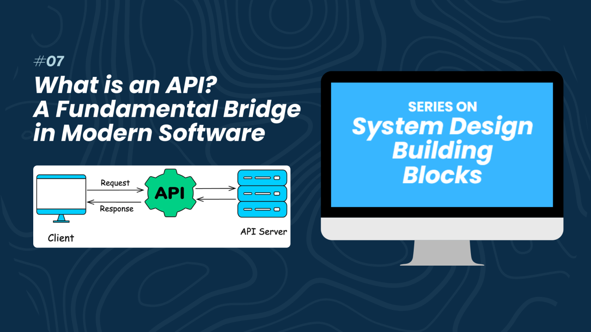

What is an API? A Fundamental Bridge in Modern Software
Ashmita Pandey · · Backend · APIs

Hi everyone, I'm Ashmita 👋
APIs are the invisible engines that power modern software. From social media and ride-sharing apps to online banking and e-commerce platforms, APIs enable different systems to interact and share data efficiently. They play a critical role in application architecture, enabling innovation, integration, and scalability.
What is an API?
API stands for Application Programming Interface. At its core, an API is a set of rules and protocols that allows one software application to interact with another.
Real-World Analogy:
Think of an API as a waiter in a restaurant. You (the client) give your order to the waiter (the API), who takes it to the kitchen (the server), and then returns with your food (the data). You do not need to know how the food is cooked or what goes on in the kitchen—you just interact with the waiter.
Examples:
- Weather API: You input a city, and it returns temperature, humidity, and weather data.
- Uber Ride API: Takes pickup and destination addresses, returns driver details and fare.
- Python sorted() API: Input a list like [5, 3, 8, 1], it returns [1, 3, 5, 8].
When engineers build APIs, they define what inputs are allowed and what outputs will be returned. This ensures consistency and predictability across applications.
How APIs Work
APIs follow a request-response cycle:
- A client (such as a mobile or web app) sends a request to an API.
- The API server processes the request, interacts with databases or services, and prepares a response.
- The response, usually in JSON or XML format, is returned to the client.
Inputs:
APIs expect specific inputs. Sending the wrong input type will lead to errors.
Example: Google Maps API expects a valid address or coordinates. Sending a name like “Ashmita” would cause an error.
Outputs:
APIs return well-structured data. For instance:
{
"latitude": 40.6892,
"longitude": -74.0445
} If an error occurs:
{
"error": "Invalid address format",
"code": 400
} APIs in Real-World Applications
Most applications are built using a frontend/backend model:
- Frontend: Interface users interact with (mobile or web app).
- Backend: Contains the APIs that manage data processing and logic.
Real-World Example: Uber
- Backend APIs: Match drivers with riders, calculate fares, handle payments, track rides.
- Frontend: A sleek interface for users to book rides, track drivers, and make payments.
The frontend sends requests to backend APIs which process data and return results to be displayed.
Types of APIs
1. Open APIs (Public APIs)
Accessible by external developers.
Example: YouTube Data API allows developers to search videos, access metadata, or manage playlists.
2. Internal APIs (Private APIs)
Used only within a company to allow internal systems to communicate.
Example: Amazon’s order processing system uses internal APIs to coordinate logistics, inventory, and payment.
3. Code Interfaces (Library APIs)
These are functions provided by programming languages or frameworks.
Example:
numbers = [5, 3, 8, 1]
numbers.sort() # Built-in sort API Libraries like TensorFlow provide APIs to build complex AI models without handling the underlying math manually.
API Communication Methods
APIs communicate using different protocols and formats. These determine how clients request data and how servers respond. Let's explore them in depth.
1. REST (Representational State Transfer)
- REST is the most commonly used API architecture.
- It uses standard HTTP methods like GET, POST, PUT, DELETE.
- Stateless communication: each request is self-contained.
- Typically exchanges data in JSON format.
Example: Bookstore API Endpoint: GET https://api.bookstore.com/books
[
{
"id": 1,
"title": "Clean Code",
"author": "Robert C. Martin"
},
{
"id": 2,
"title": "The Pragmatic Programmer",
"author": "Andrew Hunt"
}
] Strengths:
- Lightweight and scalable.
- Simple to use across platforms.
Weaknesses:
- Can lead to over-fetching or under-fetching of data.
- No strict typing for data structures.
2. SOAP (Simple Object Access Protocol)
- SOAP is a protocol-based architecture using XML for message formatting.
- It requires a WSDL document to define the API interface.
Example: Banking SOAP API
<soapenv:Envelope xmlns:soapenv="http://schemas.xmlsoap.org/soap/envelope/">
<soapenv:Body>
<GetAccountBalance>
<accountNumber>123456</accountNumber>
</GetAccountBalance>
</soapenv:Body>
</soapenv:Envelope> Strengths:
- Built-in security and transactional reliability.
- Highly structured, suitable for complex operations.
Weaknesses:
- Verbose and less human-readable.
- More difficult to work with compared to REST.
3. GraphQL
- A query language for APIs developed by Facebook.
- Allows clients to request only the data they need.
- All requests go through a single endpoint.
Example:
{
user(id: 123) {
name
posts {
title
likes
}
}
} Strengths:
- Eliminates over-fetching and under-fetching.
- Strongly typed schema.
Weaknesses:
- Steeper learning curve.
- Caching and tooling can be more complex.
4. gRPC (Google Remote Procedure Call)
- Developed by Google for high-performance communication.
- Uses Protocol Buffers (Protobuf) for compact, fast data serialization.
- Supports synchronous and asynchronous streaming.
Example Use Case:
- Real-time messaging apps and media streaming platforms.
Strengths:
- Efficient and lightweight.
- Great for microservices and polyglot environments.
Weaknesses:
- Not human-readable.
- Requires client libraries and code generation.
Conclusion
APIs are at the heart of how modern software operates. Understanding the different types of APIs such as open, internal, and code interfaces, along with their communication methods like REST, SOAP, GraphQL, and gRPC, gives developers and product builders a powerful toolkit. Whether you are building the next big mobile app, integrating with a third-party platform, or optimizing internal systems, APIs provide the flexibility and scalability needed to innovate.
Thanks for reading!